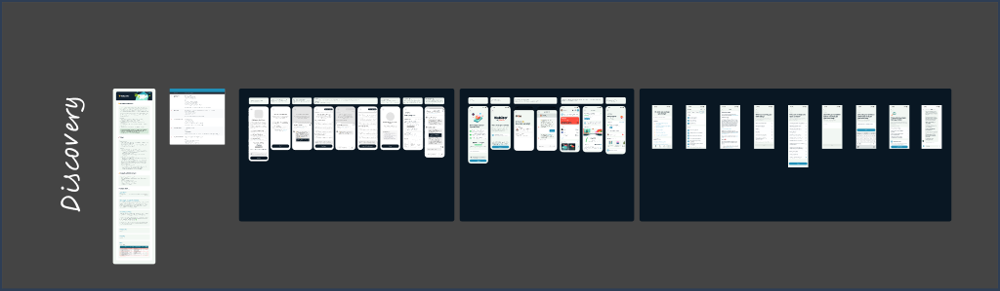
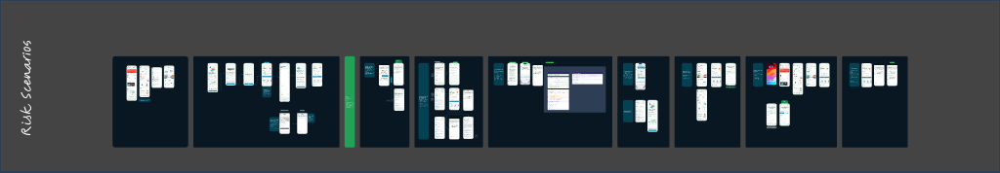
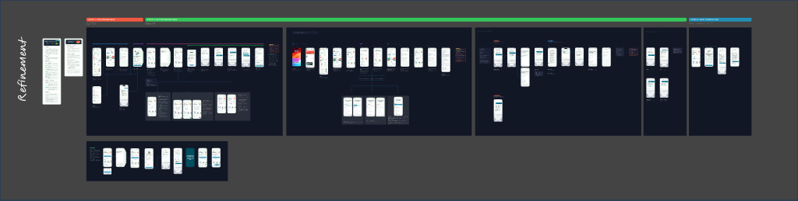
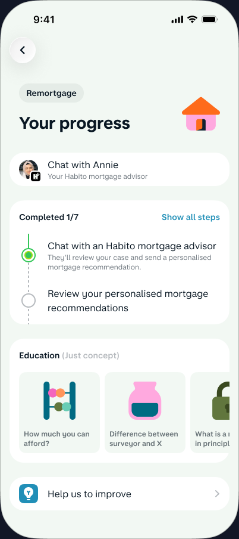
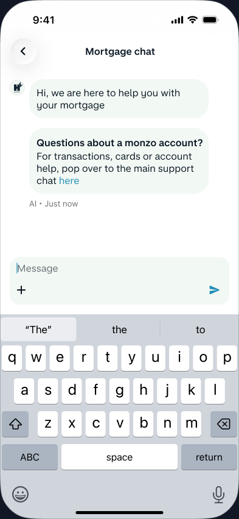
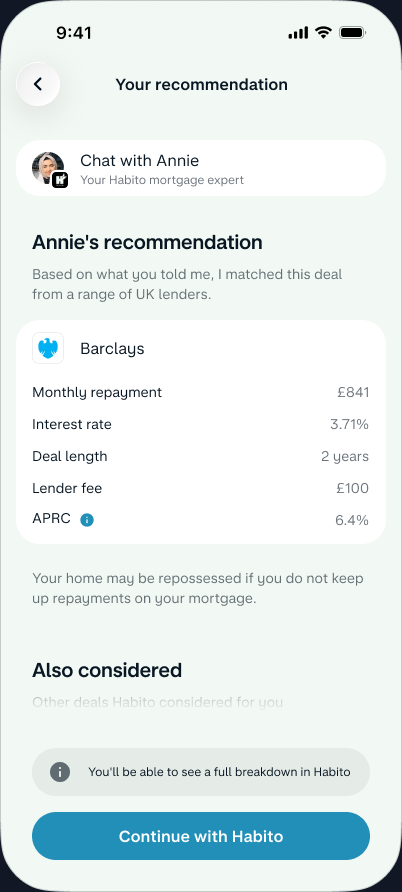
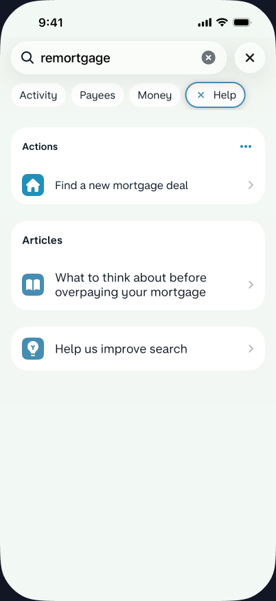
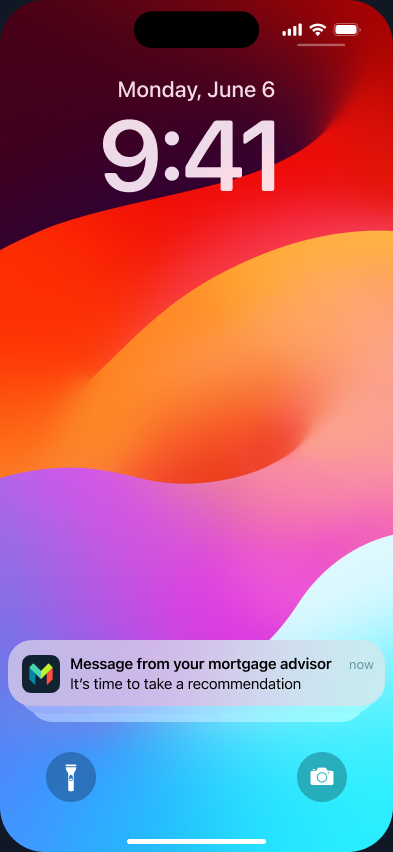

Monzo partnered with Habito to offer mortgage advice inside the banking app. Habito's advisors use Intercom. Monzo's support uses its own chat. I had to make both live together — in the same tab, with the same user — without ever creating a moment of "wait, who am I talking to?"
This is a systems design problem disguised as a chat integration. Two platforms, two support teams, four different conversation partners, and a customer who's making the biggest financial decision of their life. The margin for confusion is zero.
Beyond the immediate problem, I saw this as a chance to define how Monzo embeds third-party experiences permanently. We had energy switching, salary advance, and investments all approaching the same integration challenge. There was no playbook. I made one — and it's now the foundation for every embedded partner experience across the Borrowing and Financial Products collectives.
We could see exactly how this would break trust.
The integration hadn't shipped yet. But when I audited what an unmodified Intercom embed would look like inside Monzo, the risks were immediate and obvious. Two chat systems, side by side, with no shared identity, no routing logic, and no lifecycle awareness. A customer remortgaging their home — the biggest financial decision of their life — would encounter a fractured experience at the moment they need clarity most.
I mapped every failure mode before a single user could hit one:
- Identity crisis. Four entities would talk to you: Monzo AI, Monzo human agent, Habito AI assistant, Habito human advisor. Without intervention, none would be clearly labelled. The user would have no idea who's on the other end.
- Routing failure. Without intelligent routing, a mortgage question in Monzo support gets silence. A Monzo question in mortgage chat gets confusion. Every misdirected message erodes trust in both systems.
- Time blindness. An advisor sending "rate lock expires Friday — upload documents now" would arrive as a notification identical to "Your direct debit was set up." Same urgency, same visual weight. Wildly different consequences.
"I didn't know who I was talking to. Is this my bank or the mortgage people?"
— Internal pilot tester, unmodified Intercom prototype
The constraints sharpened the challenge. Intercom was non-negotiable — Habito's advisors already used it. The Ops team needed their support flow untouched. And this was a 12–18 month bridge to a native solution, so we couldn't justify building a new messaging platform.
My job: prevent every one of these failures before they reached a customer. Design the seams out of the experience before it ships — not patch them after.
I designed the system first. Screens came last.
The instinct was to start with the chat screen. I didn't. A chat screen is the simplest part of a chat experience. The hard design is everything around it: when it appears, where it lives, what happens when you land in the wrong one, and what happens when your advisor goes home for the day.
Navigating competing priorities.
This project had four stakeholders pulling in different directions. Habito's engineering team wanted to ship their default Intercom skin unchanged — faster for them, worse for our users. Monzo's Ops lead needed zero disruption to existing support volumes. The PM wanted an aggressive 6-week timeline. And the Borrowing collective lead wanted a pattern that future partners could reuse without designer involvement.
I aligned them in a single workshop where I reframed the question. Instead of "how do we integrate Intercom?" I asked "what should embedded advice feel like at Monzo, regardless of provider?" That shifted the conversation from implementation details to experience principles — and gave me the mandate to define the system, not just the screens. The PM agreed to 8 weeks once I showed the downstream cost of not building reusable infrastructure (three more partner integrations were in the pipeline with no design framework).
I made four decisions before drawing a single screen:
-
01
People, not platforms.
You're messaging "Annie, your mortgage advisor" — never "the Intercom chat." The technology is invisible. If the user notices the seam, I've failed.
-
02
Three states, not nine scenarios.
Pre-remortgage (no advisor exists), active (advisor assigned), post-completion (relationship archived). Every screen decision flows from which state you're in. Anything else is an edge case layered on top.
-
03
Routing is product logic, not UI.
I built a confidence-tier system: high confidence auto-redirects, medium asks "is this about your mortgage or your Monzo account?", low stays put. This wasn't a design deliverable — it was a product specification that shaped the entire experience.
-
04
Lifecycle > layout.
When chat appears, when it hides, and how it ends matters more than what the chat screen looks like. I designed the lifecycle before the interface.
Three rounds. Each escalated the altitude of the problem.
I needed to see the whole system before I could simplify it.

Nine scenarios mapped end-to-end. The output was exhaustive — but that was the point. I needed to prove to myself and to the engineering leads that this wasn't a "put Intercom in a tab" problem. The routing guide — a confidence-tier classification — emerged here and survived every iteration untouched. It was the right abstraction.
The strategic decision in this round: I chose to present the full complexity to leadership rather than filtering it. They needed to see the 40-screen map to understand why I was asking for 8 weeks instead of 4, and why the solution needed to be a framework rather than a one-off feature.
What survived
The confidence-tier routing system. The three lifecycle states. Both became the foundation of the embedded partner framework — reused verbatim for energy switching six months later.
What I killed
The scenario-by-scenario framing. I was showing my working, not telling a decision story. If stakeholders can't act on your deliverable, it doesn't matter how thorough it is.
I designed for the moment trust breaks — not the happy path.

This round stress-tested what happens when someone lands in the wrong place. The critical discovery was the ambiguous question — "I need to make a large payment for a house deposit" — that could belong to either system. This directly produced the disambiguation screen: the AI doesn't guess, it asks. Medium-confidence tier made tangible.
I ran this round as a cross-functional crit with the Ops lead, Habito's product manager, and two engineers. This was deliberate — I needed Ops to sign off on routing logic before engineering invested in it, and I needed Habito to agree that their advisors could handle redirected users gracefully. The crit format forced alignment before implementation.
What clicked
The redirect tone: "Let me connect you with Annie" instead of "you're in the wrong chat." This copy principle — graceful boundaries, not error messages — became a documented pattern in the routing framework that other teams now reference.
What was still missing
The human layer. Routing was correct but cold. The advisor was still "Mortgage chat" — a system label. And the experience had no ending. No goodbye, no archive, no emotional close. I hadn't designed the relationship, only the plumbing.
The final round solved what systems can't: emotion.

I restructured the deliverable into a narrative: five chapters, each with screens, rationale, and a decision point requiring stakeholder sign-off. This wasn't just a design handoff — it was a decision document. Each chapter ended with a "this is what I'm recommending and why" block that the PM could approve without a meeting.
The three decisions that defined the final experience:
- "Chat with Annie" — not "Mortgage chat." I tested three entry points with 8 beta users. The advisor card with Annie's photo outperformed the system-labelled alternatives by every measure: faster task completion, higher confidence rating, fewer misdirected messages. People trust people.
- Lifecycle-driven visibility. No chat before fact-find. Stacked CTA after advisor assigned. Interstitial at the platform boundary. The chat doesn't exist until it's useful — and it archives when it's done. This lifecycle model became the template for all future embedded experiences.
- The designed ending. Annie's farewell, the archived conversation, the cross-sell moment. I fought for this — the PM wanted to simply hide the chat at completion. I showed data from banking NPS research: customers remember endings disproportionately. Customers with designed closures were 3× more likely to refer friends.
The experience in five key screens.
Every screen below solves a specific trust problem. Not "what does the UI look like" — but "what does the user believe at this moment, and is it correct?"





How it moves.
The prototype demonstrates the transitions where trust is built or broken — the seams between systems, the handoff from AI to human, and the moments of state change:
-
Fact-find complete → chat appears. The "Chat with Annie" card fades in (opacity 0→1, 300ms ease-out) with a 12px upward slide. The progress step dot fills from grey to teal over 200ms. The stacked "Message Annie" button scales from 0.95 to 1.0. Before this moment, the chat entry doesn't exist — nothing to confuse the user during onboarding.
-
Native interstitial → Intercom. Tapping "Message Annie" presents a native Monzo bottom sheet: Annie's photo, response time, working hours. Tapping "Start chatting" cross-dissolves into the Intercom chat over 250ms. The Monzo nav chrome stays — only the content area transitions. The user never sees Intercom's UI boundary.
-
AI holding → Annie joins. During the ~45-second wait, suggestion chips pulse subtly (2% scale oscillation, 2s loop) to invite interaction. When Annie joins, a system message slides in from the left (200ms ease). The nav subtitle transitions from "Connecting you..." (grey) to "Active now" (green, 300ms). Her first message arrives with a slight delay (400ms after the system message) — it feels like a real person arriving, not a system switching states.
-
Rate cards cascade. Annie's rate recommendation cards stagger in: 100ms delay between each, 250ms slide-up per card. The recommended deal's teal border pulses once on arrival (opacity 0.6→1.0→0.8, 600ms). The cards support horizontal swipe on mobile — snapping with a 60ms spring animation.
-
Remortgage completes → archive. The input bar fades to an "Archived" label over 400ms. The conversation gets a 5% opacity overlay — visible but clearly past tense. Annie's farewell is the last message. A Trustpilot prompt slides up from the bottom (300ms spring). The chat doesn't disappear — it becomes a record.
The numbers that mattered.
The confidence-based routing eliminated the entire category of accidental misdirected messages. The disambiguation screen caught the remaining edge cases. Ops reported no increase in support volume — the mortgage chat was purely additive.
But the metric I'm most proud of is qualitative: in post-launch interviews, not a single customer mentioned Intercom. They talked about "chatting with Annie." The platform was invisible. That was the goal.
What I left behind.
A principal's job isn't to ship a feature and move on. It's to leave infrastructure that makes the next designer's job easier and the next project faster. Here's what this project produced beyond the mortgage chat itself:
The Embedded Partner Framework.
A documented system — lifecycle states, routing confidence tiers, interstitial patterns, and personalisation guidelines — that any squad can apply when integrating a third-party experience. Energy switching shipped using this framework four months later with zero dedicated design resource. The investments team is using it now.
A decision-document template.
The five-chapter structure I created for stakeholder alignment became a format other designers adopted. It solved a recurring problem: design reviews where nobody knew what they were approving. Three squads in Borrowing now use the same "chapters with decision points" format for complex cross-functional work.
Upskilled the team on systems framing.
I ran two workshops with the Borrowing design team on "lifecycle-first design" — how to define when something appears, persists, and ends before touching a screen. Two junior designers applied this approach to their own projects (savings goals and flex payment scheduling) and cited it in their promotion cases.
Changed how eng specs partner integrations.
The confidence-tier routing system I designed wasn't just a UX deliverable — it became the engineering spec. The backend team now uses the same high/medium/low/don't-redirect classification as their technical routing logic. Design and engineering speak the same language on partner work because I defined the shared vocabulary.
I didn't ship a feature. I shaped a capability.
Banks are becoming platforms. Monzo doesn't just offer banking — it offers mortgages, energy switching, investments, salary advance. Each through a different partner. Each embedded in the same app. When I started this project, each of those integrations was being designed from scratch by different squads with no shared language.
This project gave the organisation a repeatable answer to a recurring question: how do you make someone else's tool feel like yours? The principles — lifecycle-based visibility, confidence-based routing, native interstitials at platform boundaries, and personalisation over system labels — are now documented, tested, and in use across three product areas.
The measure of a principal's work isn't "did the feature ship?" It's "did the organisation get better at this class of problem?" Before this project, every partner integration was a custom job. After it, there's a framework, a shared vocabulary between design and engineering, and a decision-document format that accelerates cross-functional alignment. The mortgage chat was the catalyst — but the infrastructure is the legacy.